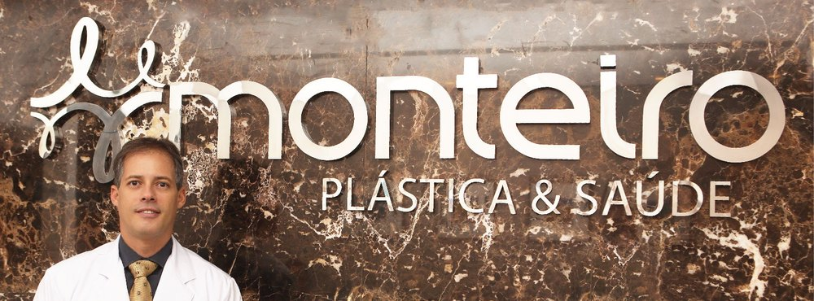
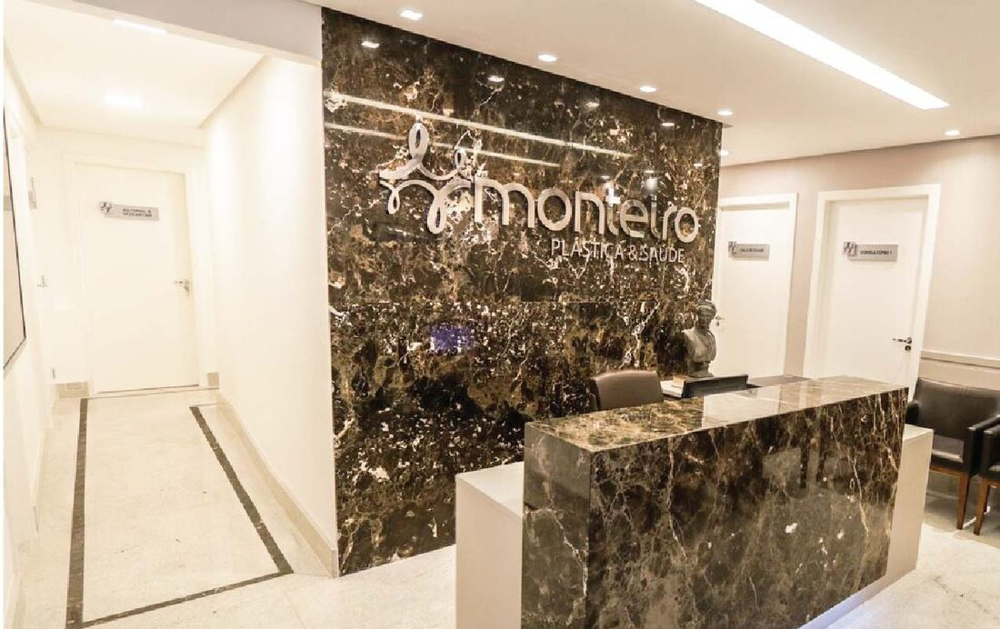
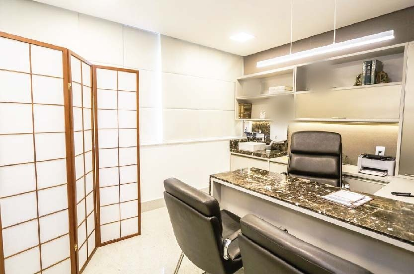
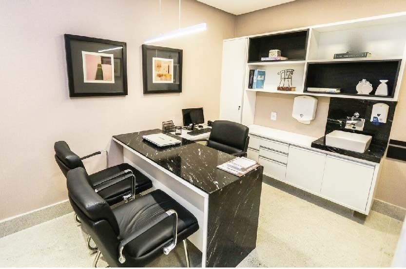

Clínica Monteiro · Plástica & Saúde
Dr. Humberto MonteiroCirurgião plástico, membro titular da Sociedade Brasileira de Cirurgia Plástica
CRM-BA 15046 · RQE 7995 · Ondina, Salvador
Atende na Clínica Monteiro Plástica & Saúde, aberta em 2011, no Edf. Master Center, em Ondina: cirurgias da face, das mamas e do contorno corporal, cirurgia pós-bariátrica e procedimentos minimamente invasivos, com hora marcada.

Por onde começar
O que trouxe você até aqui?
Escolha o assunto e leia com calma antes da consulta. As páginas trazem informação geral sobre cada área que o Dr. Humberto declara na SBCP; a indicação é sempre individual, definida em consulta.
Quero mudar algo no rosto
Nariz, pálpebras, lifting, queixo e orelhas: o que cada cirurgia faz.
Cirurgia da faceMamasPenso em uma cirurgia das mamas
Prótese de silicone, redução, mastopexia e ginecomastia.
MamasCorpoGordura localizada ou flacidez
Lipoaspiração, abdominoplastia, implantes de glúteos e liftings de braços e coxas.
Contorno corporalDepois da bariátricaPerdi muito peso e sobrou pele
Quando pensar na cirurgia, as regiões tratadas e a correção de cicatrizes.
Pós-bariátricaA Clínica Monteiro
Plástica & Saúde, em Ondina.
A Clínica Monteiro Plástica & Saúde foi aberta em 2011 e fica no Edf. Master Center, na Av. Adhemar de Barros, hoje Av. Milton Santos. É a clínica do Dr. Humberto: recepção com parede e balcão de mármore marrom, a mesma parede do letreiro, e consultórios com mesas de mármore.



Face, mamas e contorno
As áreas que ele declara na SBCP.
No perfil da Sociedade Brasileira de Cirurgia Plástica, o Dr. Humberto lista as cirurgias e os procedimentos que faz. Aqui estão organizados como um índice: cada grupo leva à página com a informação geral.
- I
Face
Rinoplastia · Blefaroplastia (pálpebras) · Cirurgia periorbitária · Lifting de face (ritidoplastia) · Minilifting de face · Lifting frontal (testa) · Mentoplastia (queixo) · Implantes faciais · Otoplastia · Condicionamento cutâneo · Microimplante capilar
Cirurgia da face - II
Mamas
Mamoplastia de aumento (próteses) · Mamoplastia redutora (redução de mamas) · Mastopexia (flacidez das mamas) · Ginecomastia
Mamas - III
Contorno corporal
Lipoaspiração · Lipoaspiração vibratória · Lipoescultura · Abdominoplastia · Gluteoplastia (implantes glúteos) · Panturrilhas (implantes) · Lifting braquial (braços) · Lifting crural (coxas) · Cirurgia pós-bariátrica
Contorno corporal - IV
Minimamente invasivos
Toxina botulínica · Preenchimentos cutâneos · Peeling químico · Dermoabrasão · Laser e luz pulsada
Minimamente invasivos - V
Cicatrizes
Correção de cicatrizes
Pós-bariátrica e cicatrizes
Com base no campo de especializações do perfil do Dr. Humberto na busca pública da SBCP, com a grafia revista.
Trajetória
Da clínica em Ondina à diretoria da SBCP-BA.
Cada linha traz a fonte pública de onde saiu: a Receita Federal, a SBCP, o CNES e os canais da clínica.
- 2011Abre a Clínica Monteiro Plástica & Saúde
A empresa do Dr. Humberto, Monteiro Cirurgia Plástica Ltda., é aberta em 30 de setembro de 2011. Hoje, a clínica fica no Edf. Master Center, em Ondina.
Fonte: Receita Federal · CNPJ 14.444.976/0001-68 - 2020–2021Diretoria da SBCP na Bahia
Tesoureiro da diretoria da Regional Bahia da Sociedade Brasileira de Cirurgia Plástica no biênio 2020/2021.
Fonte: página de eleições da SBCP - Desde 2025Hospital Municipal de Salvador
Cirurgião plástico do hospital, na rede pública, segundo o CNES (competência de setembro de 2026).
Fonte: CNES - 2026Entrevista
Entrevistado no GAC Rede Podcast, transmitido pelo Burburinho News em 11 de maio de 2026.
Fonte: vídeo no YouTube - HojeMembro titular da SBCP
Na busca pública da Sociedade Brasileira de Cirurgia Plástica, com o CRM 15046.
Fonte: perfil na SBCP
Nas palavras da clínica
“Conheça toda a nossa estrutura, feita pensando em você.”
Chamada da seção “Nossa Estrutura” no site da Clínica Monteiro (2017–2024), na cópia de outubro de 2024 no Internet Archive.
A primeira consulta
O que esperar do primeiro encontro.
Informação geral, válida para a cirurgia plástica como um todo. A consulta é o momento de avaliar, explicar e decidir sem pressa; a indicação é sempre individual.
- A conversaVocê conta o que incomoda e o que espera. O médico pergunta sobre saúde, medicamentos, cirurgias anteriores, alergias e tabagismo.
- O exameA região é examinada com calma: medidas, qualidade da pele e dos tecidos entram na avaliação.
- As opçõesO que pode ser feito, inclusive não operar, com os riscos, as cicatrizes, a recuperação e os limites de cada caminho.
- O tempo de decidirSe houver indicação de cirurgia, vêm os exames e a avaliação antes da operação. A decisão é sua, sem pressa.
Avaliações no Google
A equipe da Monteiro e o atendimento são excelentes. Dr. Humberto é muito respeitado pela sua competência.
Ótima clínica, parabéns!
Conteúdos
Para ler e assistir.
As páginas deste site e os materiais públicos do Dr. Humberto e da clínica, com link para a fonte original.
Onde atende
Edf. Master Center, em Ondina.
O endereço da clínica na Receita Federal, no perfil da SBCP e na ficha do Google. As consultas são com hora marcada.
Clínica Monteiro Plástica & SaúdeEdf. Master Center · Av. Adhemar de Barros (hoje Av. Milton Santos), 1156, sala 103 · Ondina · Salvador – BA · CEP 40170-110
Os dias e horários são combinados com a equipe pelo WhatsApp.
WhatsApp de agendamento: (71) 98665-0069
Endereço, mapa e o que levarDúvidas frequentes
Perguntas comuns
Onde fica a clínica?
No Edf. Master Center: Av. Adhemar de Barros (hoje Av. Milton Santos), 1156, sala 103, Ondina, Salvador – BA, CEP 40170-110. Veja o mapa e como chegar.
Como agendar uma consulta?
Pelo WhatsApp de agendamento da clínica, (71) 98665-0069, o mesmo do botão “Agende via WhatsApp” do Linktree da Clínica Monteiro. O atendimento é com hora marcada.
Qual é o horário de atendimento?
O atendimento é com hora marcada: os dias e horários são combinados com a equipe pelo WhatsApp.
O Dr. Humberto é membro da Sociedade Brasileira de Cirurgia Plástica?
Sim. Na busca pública da SBCP, ele aparece como membro titular, com o CRM 15046. No biênio 2020/2021, foi tesoureiro da diretoria da Regional Bahia da Sociedade.
Quais cirurgias e procedimentos ele faz?
As áreas que ele declara no perfil da SBCP incluem cirurgias da face, das mamas e do contorno corporal, cirurgia pós-bariátrica, correção de cicatrizes e procedimentos minimamente invasivos. Veja o índice das áreas.
A consulta já define a cirurgia?
A consulta serve para avaliar a queixa e explicar as opções, com riscos e recuperação. A indicação é individual, e a decisão é sua.
Agende
Uma consulta com o Dr. Humberto, em Ondina.
Atendimento com hora marcada na Clínica Monteiro Plástica & Saúde, Edf. Master Center, sala 103. Fale com a equipe pelo WhatsApp (71) 98665-0069.